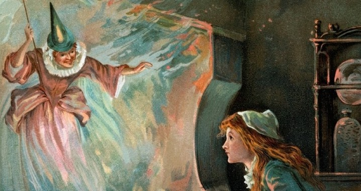

Once Upon a Page
Once Upon a Page

Cinderella

Cinderella’s mother died while she was a very little child, leaving her to the care of her father and her step-sisters, who were very much older than herself; for Cinderella’s father had been twice married, and her mother was his second wife. Now, Cinderella’s sisters did not love her, and were very unkind to her. As she grew older they made her work as a servant, and even sift the cinders; on which account they used to call her in mockery “Cinderella.” It was not her real name, but she became afterwards so well known by it that her proper one has been forgotten.
She was a very sweet-tempered, good girl, however, and everybody (except her cruel sisters) loved her.
It happened, when Cinderella was about seventeen years old, that the King of that country gave a ball, to which all ladies of the land, and among the rest the young girl’s sisters, were invited. And they made her dress them for the ball, but never thought of allowing her to go there.
“I wish you would take me to the ball with you,” said Cinderella, meekly.
“Take you, indeed!” answered the elder sister, with a sneer; “it is no place for a cinder-sifter: stay at home and do your work.”
When they were gone, Cinderella, whose heart was very sad, sat down and cried bitterly; but as she sat sorrowful, thinking of the unkindness of her sisters, a voice called to her from the garden, and she went out to see who was there. It was her godmother, a good old Fairy.
“Do not cry, Cinderella,” she said; “you also shall go to the ball, because you are a kind, good girl. Bring me a large pumpkin.”
Cinderella obeyed, and the Fairy, touching it with her wand, turned it into a grand coach. Then she desired Cinderella to go to the trap, and bring her a rat. The girl obeyed, and a touch of the Fairy’s wand turned him into a very smart coachman. Two mice were turned into footmen; four grasshoppers into white horses. Next, the Fairy touched Cinderella’s rags, and they became rich satin robes, trimmed with point lace. Diamonds shone in her hair and on her neck and arms, and her kind godmother thought she had seldom seen so lovely a girl. Her old shoes became a charming pair of glass slippers, which shone like diamonds